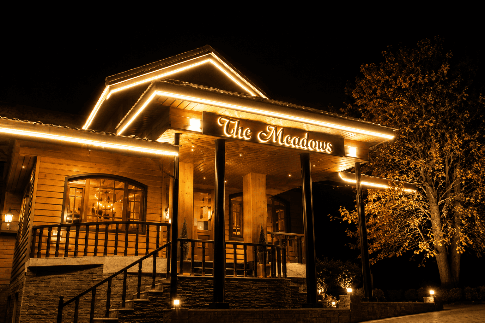

Bangus Valley
Twin alpine meadows with no crowds at all.
Explore
Over the Razdan Pass lies a valley of log-wood villages threaded along the jade Kishanganga, watched over by the pyramid of Habba Khatoon. Dard-Shin country — a living culture and light photographers cross continents for.

The Valley
Gurez sits close to the Line of Control, cradled by the Kishanganga and the peaks of the Great Himalaya. Its Dard-Shin people, distinct language and timber architecture make it one of the most culturally singular corners of Kashmir.
We travel gently here — staying with local families, walking the villages, and letting the valley's extraordinary light do the rest. This is slow, respectful, deeply memorable travel.
From ₹19,900 / person
Book This TripDay by Day
Drive over Razdan Pass into the valley, following the jade Kishanganga to Dawar, the valley's main village. Evening walk beneath Habba Khatoon peak.
A full day exploring the remote Tulail sub-valley — log-wood hamlets, wooden mosques and Dard-Shin village life almost untouched by time.
Walks and photography around the pyramid-shaped Habba Khatoon peak, riverside picnics and time with local hosts.
A leisurely return over the pass with photo stops, arriving Srinagar by evening.
Why You'll Love It
The valley's iconic pyramid mountain, named for Kashmir's poet-queen.
Log-wood villages, a distinct language and warm frontier hospitality.
The Kishanganga, timber hamlets and mountain light in every direction.
The Fine Print
Good to Know
Indian nationals need no special permit. Foreign nationals require a simple registration which we arrange in advance. We handle all paperwork either way.
A spectacular road journey from Srinagar over the 3,300 m Razdan Pass — around 5–6 hours through Bandipora and up into the valley.
Warm, simple and characterful: family-run guesthouses, log-wood homestays and our own deluxe riverside camp.
Only patchy postpaid coverage — which is rather the point. Come to disconnect.
May to October. The valley is greenest and the Kishanganga at its most beautiful from June to September; the road closes with winter snow.
Gurez hosts only a handful of guests at a time — reserve early.